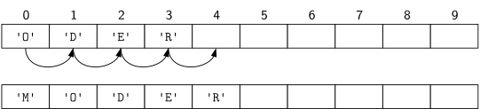

Licenca
To delo je na voljo pod pogoji slovenske licence Creative Commons 2.5:
priznanje avtorstva - nekomercialno - deljenje pod enakimi pogoji.
Celotna licenca je na voljo na spletu na naslovu http://creativecommons.org/licenses/by-nc-sa/2.5/si/. V skladu s to licenco je dovoljeno vsakemu uporabniku delo razmnoževati, distribuirati, javno priobčevati, dajati v najem in tudi predelovati, vendar samo v nekomercialne namene in ob pogoju, da navede avtorja oziroma avtorje in izdajatelja tega dela. Če uporabnik delo predela, kar pomeni, da ga spremeni, preoblikuje, prevede ali uporabi to delo v svojem delu, lahko predelavo dela ponudi na voljo le pod pogoji, ki so enaki pogojem iz te licence oziroma pod enako licenco.

Implementacija s tabelo elementov

Seveda to namesto nas naredi pythonova funkcija insert, a časovna zahtevnost zato ni nič manjša. Pri dodajanju na začetek potrebujemo točno n premikov, če je n število elementov v tabeli pred dodajanjem. Pri vstavljanju na druge položaje je število premikov manjše, vendar pa je v povprečju (preko vseh možnih položajev vstavljanja) še vedno premosorazmerno s številom elementov. Časovna zahtevnost vstavljanja na poljubno mesto je potemtakem O(n).
Vaja
Ustvari prazno tabelo, nato pa vanjo 10.000-krat vstavi isto število (katerokoli), in to vedno na začetek tabele. Izmeri čas izvajanja. Nato ponovno ustvari prazno tabelo in na začetek tabele 20.000-krat vstavi isto število. Ponovno izmeri čas izvajanja. Nato ponovi vajo še za 30.000 vstavljanj, 40.000 vstavljanj itd., vse do 100.000 vstavljanj istega števila na začetek tabele. Na papir skiciraj graf porabe časa v odvisnosti od števila vstavljanj.
Opomba: Program za merjenje časa zapiši v datoteko in ga poženi v terminalu na tvojem računalniku, ne v vgrajenem pythonovem tolmaču. Če je tvoj računalnik (pre)hiter in tudi 100 000 vstavljanj obdela v manj kot sekundi, ponovi svoj poskus z 100.000 vstavljanji in nato nadaljuj z 200.000, 300.000 itd. Če se tvoj računalnik že pri 10.000 vstavljanjih »muči« nekaj sekund, pa prični s 1000 vstavljanji in nato nadaljuj za 2000, 3000 itd.
Vaja
Ali znaš natančno izračunati skupno število premikov elementov v tabeli, potrebnih za n vstavljanj na začetek? Na primer, koliko premikov je potrebnih pri n = 5 zaporednih vstavljanjih na začetek?
Vaja
Ustvari prazno tabelo, nato pa vanjo 10.000-krat dodaj isto število (katerokoli), in to vedno na konec tabele. Izmeri čas izvajanja. Nato ponovno ustvari prazno tabelo in na konec tabele 20.000-krat dodaj isto število. Ponovno izmeri čas izvajanja. Nato ponovi vajo še za 30.000 dodajanj, 40.000 dodajanj itd., vse do 100.000 dodajanj istega števila na konec tabele. Na papir skiciraj graf porabe časa v odvisnosti od števila dodajanj.
Opomba: Če si pri merjenju časa za vstavljanje na začetek pričel(-a) s 100.000 oz. s 1000 elementi, naredi tako tudi tukaj.
Vaja
Kakšna je časovna zahtevnost operacije odstranjevanja elementa z začetka tabele in kakšna pri odstranjevanju s konca tabele?